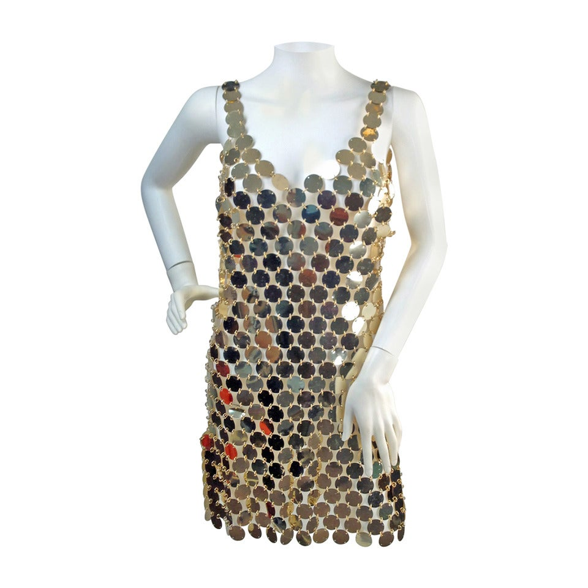
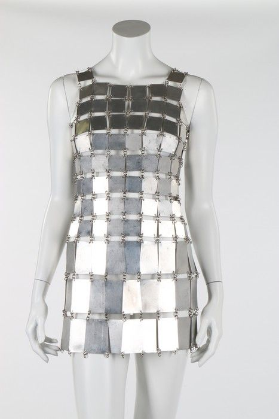
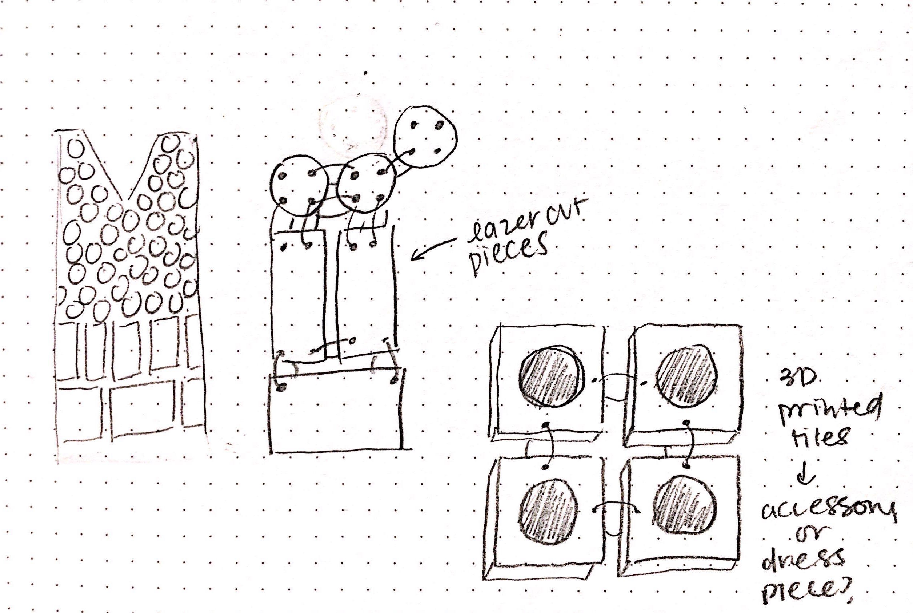
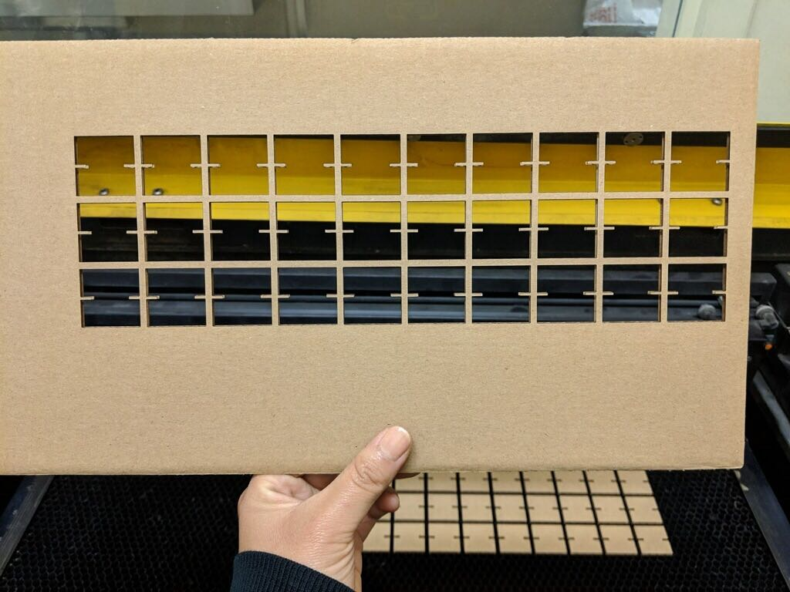
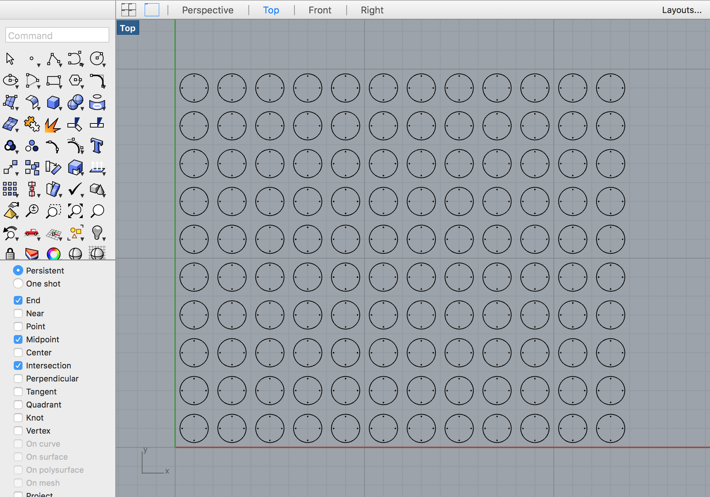

I recreated Paco Rabanne’s iconic metallic disc dress using 1.5" circular chipboard discs.
This product is intended to be displayed rather than worn.



In my materials research, I was constrained by available materials and cost. My original intent was to use cardboard or poster board, but I was worried that the assembly process would damage the chip material. I purchased High Density Polyethelene (HDPE) boards but realized that the thermoplastic would likely melt or warp when last cut. Ultimately, I used chipboard as the primary material because it was affordable and durable.
Throughout the quarter, I used simple shapes to create screen block pattern designs from mid-century design and architecture. When I lasercut screen block patterns for assignments 1, 2, and 3, I was left with so many cut-out pieces (negative space on the pattern) that I didn’t want to throw away! I was reminded and inspired by Rabanne’s use of unconventional materials in design and want to create my own wearables inspired by the Spanish designer’s work.

I designed my chips in Rhino to be laser cut. Each chip is 1.5" with four .05" holes for the steel rings. Each hole is 3mm in from the edge of the disc. I used a linear array to copy my design to fit on a 16x20" sheet (cut from a 32x40" sheet) of chipboard to be laser cut. Each 1/4th sheet produces 120 discs.
